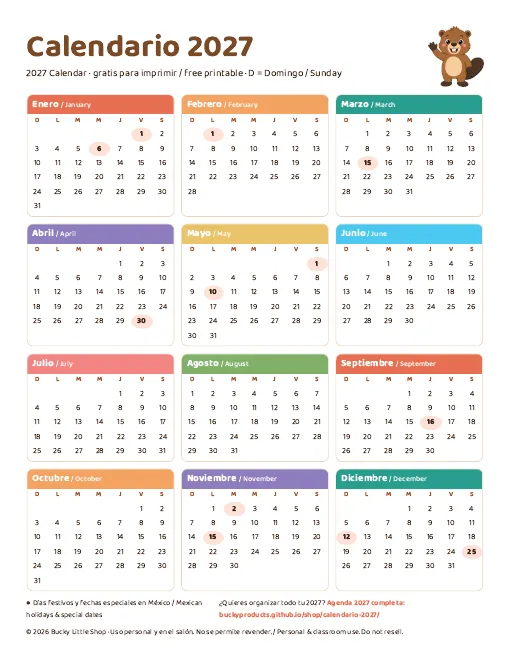

Inicio › Calendario 2027
Calendario 2027 para imprimir gratis (PDF)
Un calendario 2027 bonito, en una sola hoja, con los días festivos de México. Descárgalo gratis en tamaño Carta o A4, sin registro.
Descarga gratis el calendario 2027

Descargar PDF tamaño Carta (Letter) Descargar PDF tamaño A4
Gratis, sin registro. Es una sola hoja con los 12 meses, la semana empieza en domingo y vienen marcados los días festivos y las fechas especiales de México. Imprímelo en casa o en la papelería; para uso personal o en el salón.
Días festivos de México en 2027
- 1 de enero: Año Nuevo
- 6 de enero: Día de Reyes
- 1 de febrero: Día de la Constitución (descanso oficial, primer lunes de febrero)
- 15 de marzo: Natalicio de Benito Juárez (descanso oficial, tercer lunes de marzo)
- 30 de abril: Día del Niño
- 1 de mayo: Día del Trabajo
- 10 de mayo: Día de las Madres
- 16 de septiembre: Día de la Independencia
- 2 de noviembre: Día de Muertos
- 15 de noviembre: Revolución Mexicana (descanso oficial, tercer lunes de noviembre)
- 12 de diciembre: Día de la Virgen de Guadalupe
- 25 de diciembre: Navidad
¿Necesitas más que un calendario?
La Agenda 2027 de Bucky trae vista anual y mensual, páginas semanales, metas, hábitos, finanzas y notas. Viene en versión digital con hipervínculos (GoodNotes, Notability, Xodo) y en versión imprimible, con inicio en lunes o en domingo, por $7.99 USD.
Imprimibles listos para descargar

Agenda 2027 digital e imprimible
Agenda completa 2027: vista anual, mensual, semanal, metas y hábitos. Inicio lunes o domingo, digital con hipervínculos e imprimible.
$7.99 USD Comprar / BuyPagar con Payhip / Mercado PagoCompartir por WhatsApp / Share
Plantillas de presupuesto, menú y boda
Organiza tu dinero y tu menú en 2027 con hojas de cálculo listas.
$9.99 USD Comprar / BuyPago con Payhip / Mercado PagoCompartir por WhatsApp / Share
Organizador del Hogar Rellenable
Carpeta para organizar la casa: limpieza, menús, pagos y contactos.
$6.99 USD Comprar / BuyPago con Payhip / Mercado PagoCompartir por WhatsApp / SharePreguntas frecuentes
¿El calendario 2027 es gratis?
Sí, es 100 % gratis y sin registro. Descarga el PDF en tamaño Carta o A4 e imprime todas las copias que necesites para uso personal o en el salón.
¿En qué día empieza la semana?
El calendario gratis empieza en domingo. La Agenda 2027 completa viene con inicio en lunes y en domingo.
¿Trae los días festivos de México?
Sí, vienen marcados los días festivos oficiales y las fechas especiales más importantes de México en 2027.
¿Cuál es la diferencia con la Agenda 2027?
El calendario es una sola hoja con el año completo. La agenda es un planificador completo con páginas mensuales, semanales, metas y hábitos, en versión digital e imprimible.
Free printable 2027 calendar (English)
Download our free one-page 2027 calendar in US Letter or A4 with no signup. It shows all 12 months with bilingual Spanish/English month names, the week starts on Sunday, and Mexican holidays are marked. Need more? The Bucky 2027 Planner ($7.99) includes monthly and weekly pages, goals and habit trackers, in a hyperlinked digital version and a printable one.